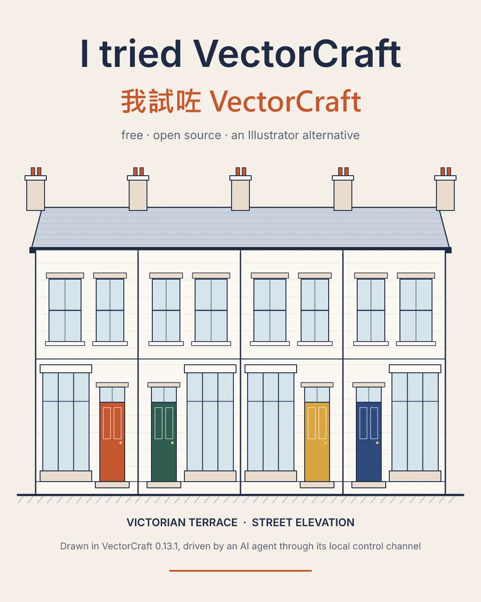
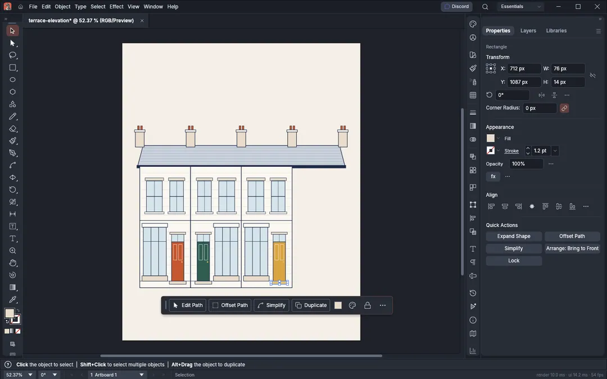
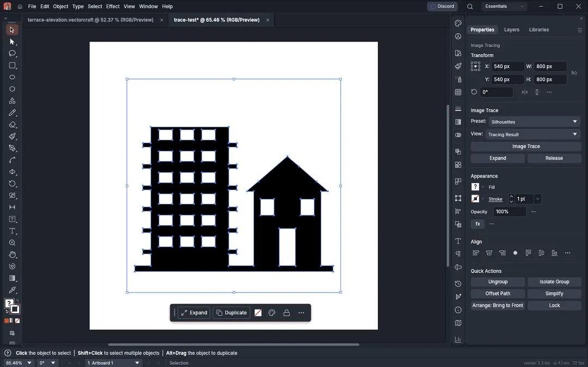

I had my AI agent draw with a new open-source design app
🎨 I had my AI agent draw with a new open-source design app. It finished a building elevation in 15 seconds. But this post isn't about the app. It's about the future behind it.

The talk of the month is ArtCraft: one developer, working with AI (Claude), rebuilt a whole set of Adobe alternatives in Rust in about two weeks: Photoshop, Illustrator, Premiere, Lightroom, Acrobat, After Effects and InDesign, all open source and free. An unofficial site even lists a CAD version, which I haven't been able to confirm.
I tried one of them, VectorCraft, the Illustrator alternative. I didn't touch the mouse. My AI agent drove it on my PC:
・VectorCraft has a control channel built for programs, with 1,077 commands, plus an MCP server so AI can plug straight in
・The agent drew a British terrace elevation in 15 seconds, about 240 objects, with zero failed commands
・Exports to SVG and PDF, all still editable
The future I see has two parts:
1. Software written by AI. Tools that once took a big company years now reach a working draft in weeks, by one person with AI.
2. Software used by AI. New tools are built to be operated by AI from day one. What AI hands back is no longer a picture you can't change, but a file you can edit line by line.
Tools that once took a big company years now reach a working draft in weeks, by one person with AI. 2.

For architects the second part matters most. We never needed a pretty image. We need a file we can change, issue and keep working on. When CAD and BIM tools can be driven by AI like this, the way we draw will change a lot.
Honest caveats: VectorCraft is still alpha, about 65% complete by the team's own estimate, and I didn't compare it with Illustrator feature by feature. Download only from the official GitHub (storytold); there are many fake sites.
If AI could work directly in the software you use every day, what file would you want it to make for you? Tell me what you think in the comments 👇
Sources:
https://www.notebookcheck.net/Photoshop-Premiere-more-Experienced-Rust-developer-recreates-Adobe-suite-with-AI-assistance-as-open-source.1419230.0.html
https://gigazine.net/gsc_news/en/20261005-artcraft-crafting-apps/
https://github.com/storytold/vectorcraft
